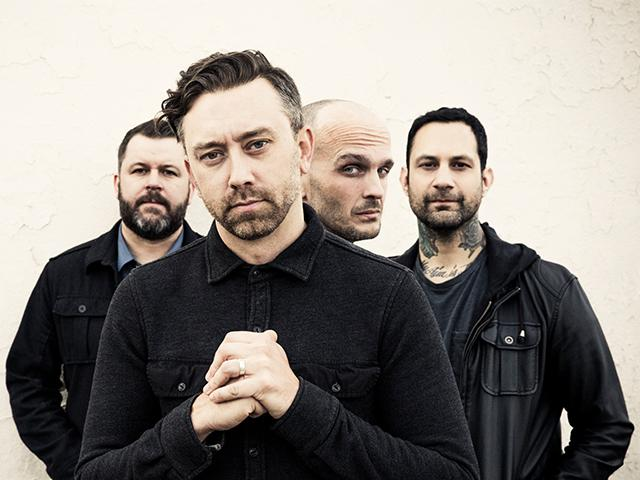

Rise against es una banda estadounidense de punk del año 1999
| Año | Disco |
|---|---|
| 2001 | The Unraveling |
| 2003 | Revolutions per Minute |
| 2004 | Siren Song of the Counter Culture |
| 2006 | The Sufferer & the Witness |
| 2008 | Appeal to Reason |
| 2011 | Endgame |
| 2014 | The Black Market |
| 2017 | Wolves |
| 2018 | The Ghost Note Symphonies, Vol.1 |
| 2021 | Nowhere Generation |
| El disco "The Sufferer & The Witness" fue Top 10 en la lista Billboard 200 | |